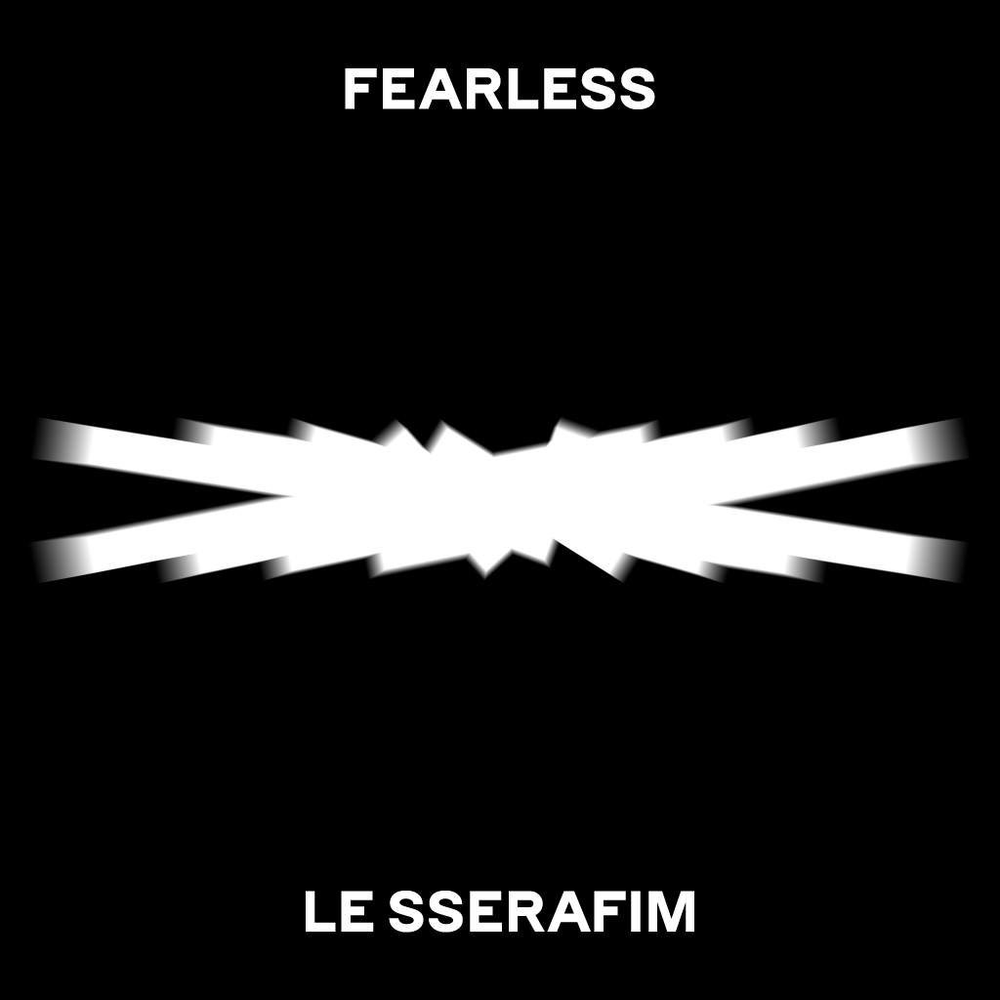
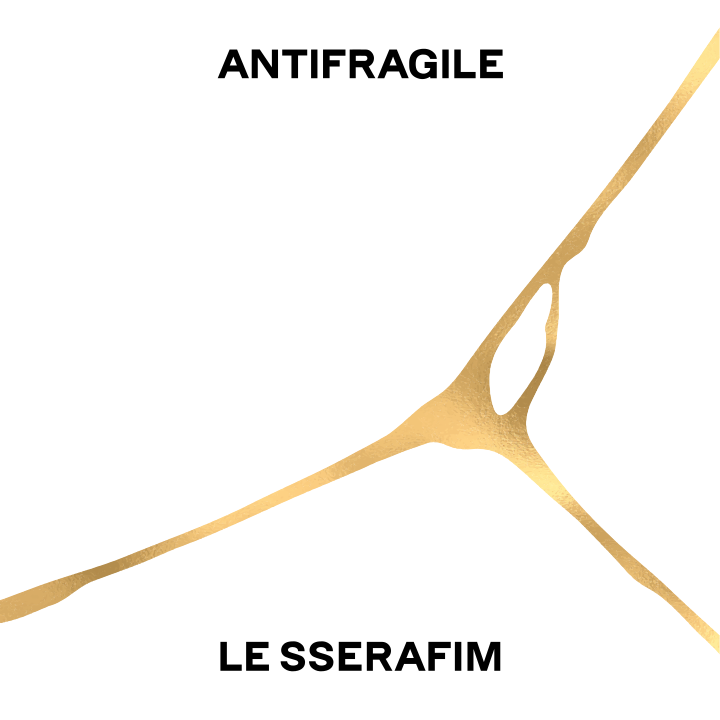

1st Mini Album

“최고가 될 거야!”...욕망을 따라 그 누구도 가 보지 못한 여정을 시작하는 르세라핌
르세라핌은 데뷔 앨범 ‘FEARLESS'를 통해 최고가 되고 싶은 ‘욕망'을 따라 그 누구도 가보지 못한 여정을 시작한다.
하이브가 론칭하는 첫 걸그룹, 사쿠라와 김채원의 재데뷔 등 르세라핌의 데뷔에 전 세계 이목이 집중된 가운데, 이들은 타인의 시선을 의식하기보다는 당당히 맞서기로 한다. 과거에 묶여 나 자신을 잃는 것은 가장 어리석은 일이요, 나와 내 욕망을 지키는 것이야말로 가치가 있다고 말한다.
앨범에는 ‘세상을 내 뜻대로 하겠어'라는 야심 찬 포부를 3개 국어로 내레이션한 ‘The World Is My Oyster', 앨범과 동명의 타이틀곡 ‘FEARLESS', 욕망을 상징하는 푸른 반딧불이에 매혹돼 미지의 세계로 모험을 떠나는 ‘Blue Flame', 인어공주 이야기를 르세라핌의 시각으로 재해석한 ‘The Great Mermaid', 이솝우화 속 여우와 신 포도 이야기를 모티브로 해 사랑에 대한 순진하면서도 이기적인 태도를 노래한 ‘Sour Grapes' 등 다섯 트랙이 수록됐다.
멤버들의 참여도도 주목할 만하다. 김채원과 허윤진은 수록곡 ‘Blue Flame'의 작사에 참여했다. 이 곡은 하이브가 개발한 오리지널 스토리 ‘크림슨 하트'(Crimson Heart)의 테마곡으로, ‘푸른 반딧불이'를 따라 마법의 황야인 ‘UNKNOWN'으로 여정을 떠나는 여섯 멤버의 설렘과 각오를 담았다.
르세라핌은 데뷔 앨범 ‘FEARLESS'를 통해 최고가 되고 싶은 ‘욕망'을 따라 그 누구도 가보지 못한 여정을 시작한다.
하이브가 론칭하는 첫 걸그룹, 사쿠라와 김채원의 재데뷔 등 르세라핌의 데뷔에 전 세계 이목이 집중된 가운데, 이들은 타인의 시선을 의식하기보다는 당당히 맞서기로 한다. 과거에 묶여 나 자신을 잃는 것은 가장 어리석은 일이요, 나와 내 욕망을 지키는 것이야말로 가치가 있다고 말한다.
앨범에는 ‘세상을 내 뜻대로 하겠어'라는 야심 찬 포부를 3개 국어로 내레이션한 ‘The World Is My Oyster', 앨범과 동명의 타이틀곡 ‘FEARLESS', 욕망을 상징하는 푸른 반딧불이에 매혹돼 미지의 세계로 모험을 떠나는 ‘Blue Flame', 인어공주 이야기를 르세라핌의 시각으로 재해석한 ‘The Great Mermaid', 이솝우화 속 여우와 신 포도 이야기를 모티브로 해 사랑에 대한 순진하면서도 이기적인 태도를 노래한 ‘Sour Grapes' 등 다섯 트랙이 수록됐다.
멤버들의 참여도도 주목할 만하다. 김채원과 허윤진은 수록곡 ‘Blue Flame'의 작사에 참여했다. 이 곡은 하이브가 개발한 오리지널 스토리 ‘크림슨 하트'(Crimson Heart)의 테마곡으로, ‘푸른 반딧불이'를 따라 마법의 황야인 ‘UNKNOWN'으로 여정을 떠나는 여섯 멤버의 설렘과 각오를 담았다.
2nd Mini Album

“시련은 우리를 더 단단하게 만들 뿐” 타이틀곡 ‘ANTIFRAGILE'
'ANTIFRAGILE'의 사전적 의미는 충격을 받을수록 더 강해지는 성질이다. 르세라핌은 이번 곡을 통해 힘든 시간을 성장을 위한 자극으로 받아들이고 이 과정에서 더 단단해지겠다는 각오를 다진다. 또한, “더 높이 가줄게 내가 바랐던 세계 젤 위에 / 떨어져도 돼 I'm antifragile antifragile” 같은 가사를 통해 잠깐 추락해도 곧 날아올라 르세라핌만의 여정을 이어갈 것이라고 말한다.
퍼포먼스에서도 절대 깨지지 않겠다는 강한 포스를 느낄 수 있다. 강인함을 어필하는 동작들은 “우리가 곧 antifragile”이라고 선언하는 듯하다. 르세라핌은 팔 근육을 활용한 안무로 굳센 의지를 표현했고 고양이를 묘사한 춤으로 매혹적인 느낌을 가미했다. 이번 퍼포먼스는 상당히 높은 난이도를 자랑하지만 다섯 멤버는 완벽한 합으로 최고의 무대를 선보일 계획이다. 또한, 모든 멤버가 고루 빛날 수 있게 각 파트별 특색을 살려 처음부터 끝까지 눈을 뗄 수 없는 퍼포먼스를 펼칠 것으로 기대된다.
뮤직비디오는 운석 충돌을 활용해, 때릴수록 더 강해진다는 ‘ANTIFRAGILE'의 의미를 풀어냈다. 어느 날 갑자기 운석이 지구를 향해 돌진하고 있다는 속보가 뜨고 사람들은 패닉에 빠진다.
하지만 르세라핌은 이런 혼란도 개의치 않고 당차게 자신만의 페이스대로 하루를 보낸다. 하늘에서 망고가 떨어질 만큼 정신없는 순간, 홍은채는 오히려 좋아하는 망고가 손에 들어와 마냥 기쁘다. 허윤진은 혼동 속에서도 자신의 음악을 들려주기 위해 버스킹에 나선다. 또한, 낙하하는 운석을 배경으로 초연하게 요가를 하는 카즈하부터 평소처럼 라이딩을 즐기는 김채원, 카트를 타고 운석을 향해 돌진하는 사쿠라까지. 시련이 와도 피하지 않고 당당하게 이를 마주하고 극복하는 르세라핌을 만날 수 있다.
'ANTIFRAGILE'의 사전적 의미는 충격을 받을수록 더 강해지는 성질이다. 르세라핌은 이번 곡을 통해 힘든 시간을 성장을 위한 자극으로 받아들이고 이 과정에서 더 단단해지겠다는 각오를 다진다. 또한, “더 높이 가줄게 내가 바랐던 세계 젤 위에 / 떨어져도 돼 I'm antifragile antifragile” 같은 가사를 통해 잠깐 추락해도 곧 날아올라 르세라핌만의 여정을 이어갈 것이라고 말한다.
퍼포먼스에서도 절대 깨지지 않겠다는 강한 포스를 느낄 수 있다. 강인함을 어필하는 동작들은 “우리가 곧 antifragile”이라고 선언하는 듯하다. 르세라핌은 팔 근육을 활용한 안무로 굳센 의지를 표현했고 고양이를 묘사한 춤으로 매혹적인 느낌을 가미했다. 이번 퍼포먼스는 상당히 높은 난이도를 자랑하지만 다섯 멤버는 완벽한 합으로 최고의 무대를 선보일 계획이다. 또한, 모든 멤버가 고루 빛날 수 있게 각 파트별 특색을 살려 처음부터 끝까지 눈을 뗄 수 없는 퍼포먼스를 펼칠 것으로 기대된다.
뮤직비디오는 운석 충돌을 활용해, 때릴수록 더 강해진다는 ‘ANTIFRAGILE'의 의미를 풀어냈다. 어느 날 갑자기 운석이 지구를 향해 돌진하고 있다는 속보가 뜨고 사람들은 패닉에 빠진다.
하지만 르세라핌은 이런 혼란도 개의치 않고 당차게 자신만의 페이스대로 하루를 보낸다. 하늘에서 망고가 떨어질 만큼 정신없는 순간, 홍은채는 오히려 좋아하는 망고가 손에 들어와 마냥 기쁘다. 허윤진은 혼동 속에서도 자신의 음악을 들려주기 위해 버스킹에 나선다. 또한, 낙하하는 운석을 배경으로 초연하게 요가를 하는 카즈하부터 평소처럼 라이딩을 즐기는 김채원, 카트를 타고 운석을 향해 돌진하는 사쿠라까지. 시련이 와도 피하지 않고 당당하게 이를 마주하고 극복하는 르세라핌을 만날 수 있다.